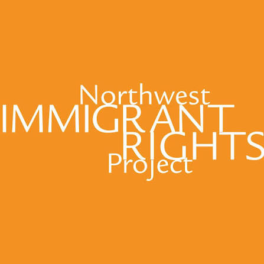

Practice beyond the mat
Yoga is more than movement.
Yoga is an ancient practice and philosophical tradition with its roots in India. In the West, it has often been reduced primarily to physical movement. But asana—the postures we practice on a yoga mat—is only one part of a much larger tradition.
The eight-limbed system of yoga also includes the yamas: ethical principles that ask us to consider how we live in relationship with other people and the world around us.
Those principles matter to me as much as what happens on the mat.
The Yamas
Ahimsa — non-violence
Ahimsa asks us to avoid causing harm and to consider our responsibility when we encounter it. To me, practicing non-violence means valuing human life and refusing to look away from violence simply because it is happening to someone else.
Satya — truthfulness
Satya asks us to seek and speak truth. I understand that as a responsibility to pay attention, to question narratives that obscure suffering, and to protect the ability of journalists and witnesses to document what is happening—especially when the truth is uncomfortable or inconvenient to those in power.
Asteya — non-stealing
Asteya asks us not to take what does not belong to us. I believe that extends beyond individual possessions to land, homes, natural resources, and people's right to determine the course of their own lives.
Brahmacharya — right use of energy
I think of brahmacharya as asking us to be intentional about where we place our energy. For me, that means staying engaged rather than caring only while a crisis has the world's attention. It means continuing to look, learn, speak, and act.
Aparigraha — non-greed
Aparigraha asks us to examine our relationship with accumulation and possession. In a world of enormous abundance alongside enormous deprivation, I believe that means asking what we owe one another. Food, water, shelter, and medical care should never be withheld from people as tools of power.
Putting those values into practice
I don't believe yoga asks us to disengage from the world in order to find peace. I believe it asks us to pay closer attention to how we move through it.
A small yoga business can't solve enormous systems of injustice. But I do believe our values should affect what we do with what we have.
That's why I donate 10% of my private-session income to organizations working to protect people affected by violence, displacement, and injustice. The organizations I support may change over time as needs change, and I'm also open to directing the donation from a session to a charity of your choice that reflects these values.
Where the giving goes
I'm currently donating to two organizations whose work reflects these values—one working globally and one here in the Pacific Northwest.
HEAL Palestine
HEAL Palestine provides humanitarian and medical support to Palestinians, with programs focused on health, education, humanitarian aid, and leadership. It's an organization I supported personally before starting this practice, and one I'm proud to continue supporting through my work.
Learn about HEAL Palestine
Northwest Immigrant Rights Project
Northwest Immigrant Rights Project provides legal services and advocacy for immigrant communities throughout Washington State, including children, families, and people facing detention or deportation. Supporting NWIRP allows part of this practice's giving to stay here in the community where I live and teach.
Learn about Northwest Immigrant Rights ProjectPlanning something that gives back?
If you're organizing a benefit, fundraiser, or community event supporting these issues—or other work aligned with these values— I'd be happy to hear from you.
I'm open to donating my time as a teacher when I'm able. If you're looking for someone to lead a yoga or movement practice as part of an event, please get in touch.
Get in touch